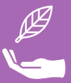

Mjedisi i vendit tim

Transporti publik dhe ekologjik
Çfarë kupton me transport publik?
Si duhet të sillemi në transport publik?
Pse është e rëndësishme të përdoret transporti ekologjik?
A ka në qarkullim transport ekologjik në vendin tonë?